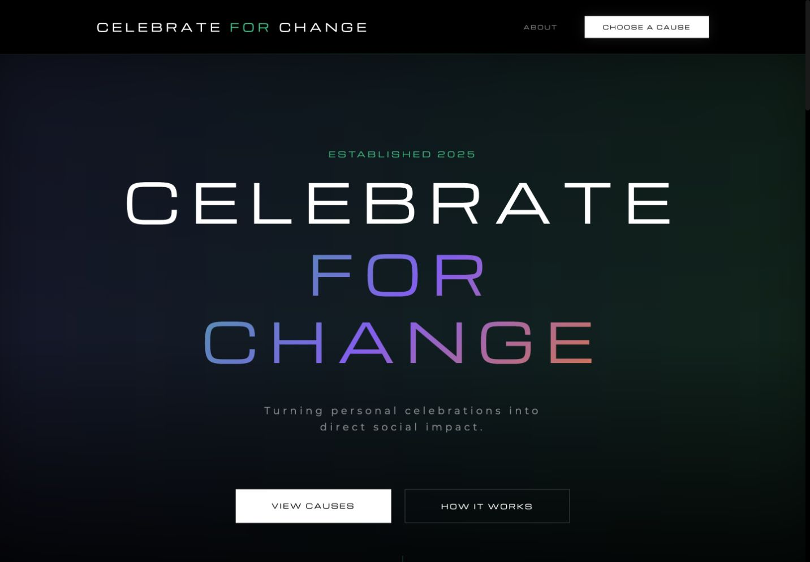
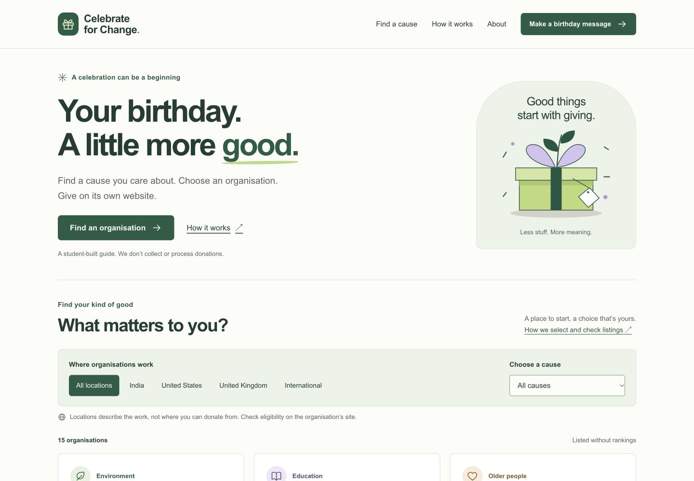
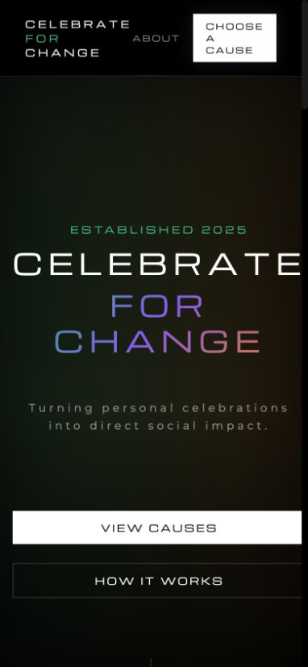
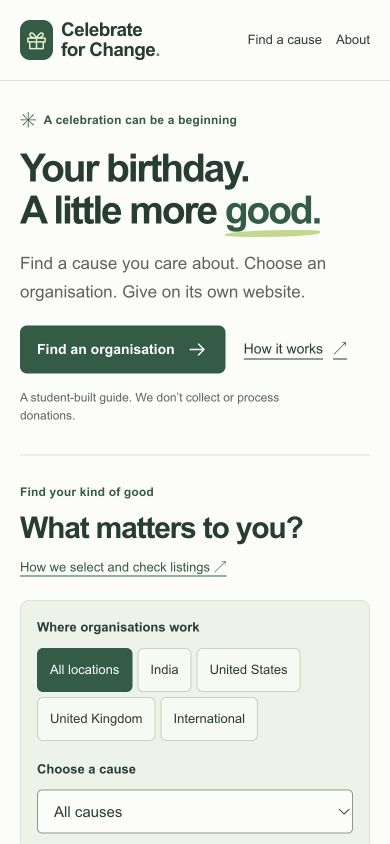
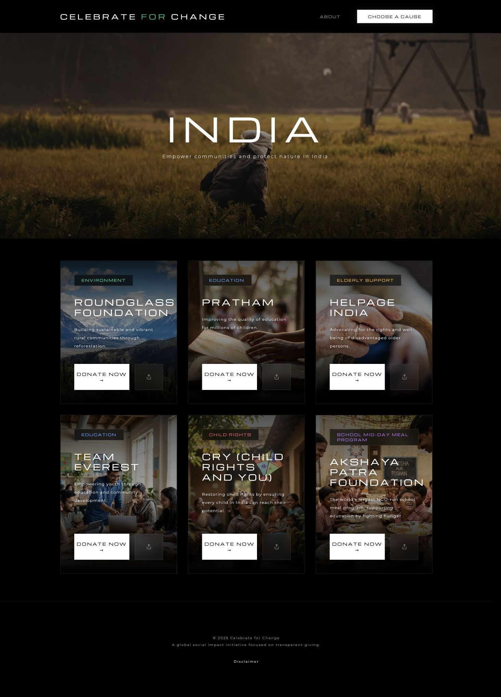
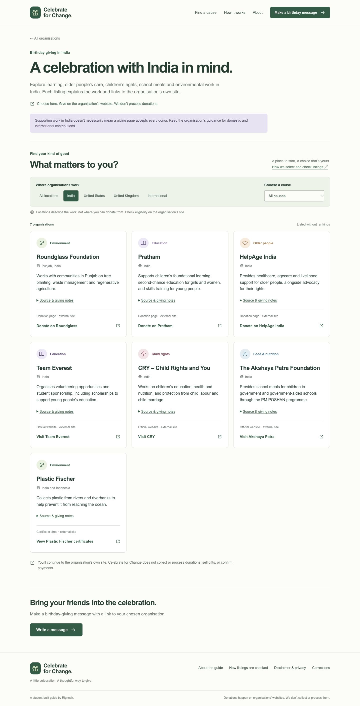
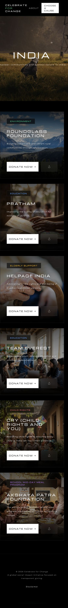
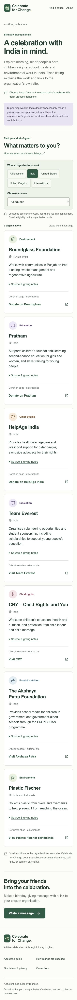
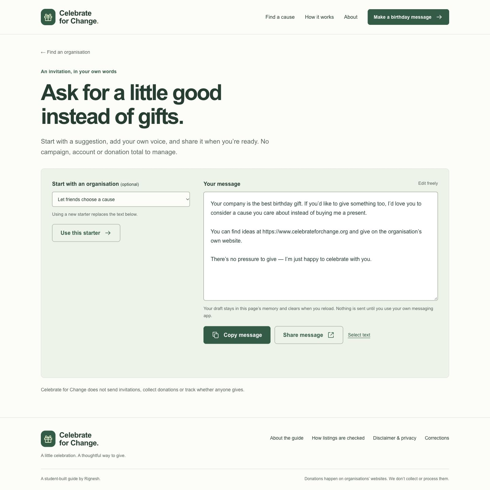
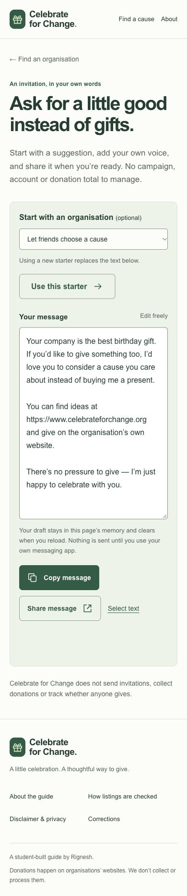

Celebrate for Change
A local redesign for review. Existing routes and all 15 live organisation destinations preserved. Nothing published. Before images show the unchanged public website; after images show the local implementation.
Read the verification report · Listing sources
Desktop · 1440 × 1000 viewport
Before

After

Mobile · 390 × 844 viewport
Before

After

Screen sizes refer to the requested CSS viewport. Browser captures can exclude scrollbar pixels; the original India page also has horizontal overflow.
Regional page — full desktop captures
Before

After

Regional page — full mobile captures
Before

After

Birthday-message tool
Desktop

Mobile
